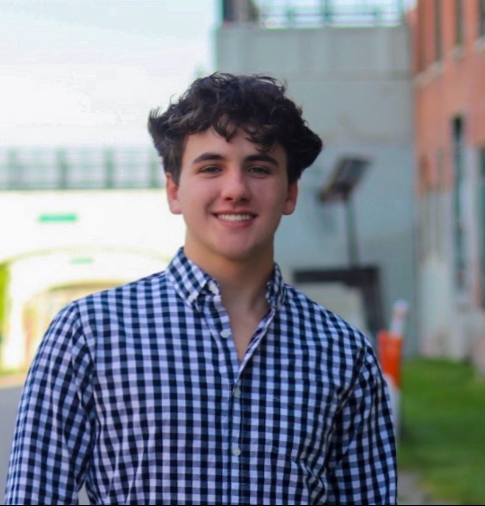

About Me
Hello, I'm Angelo Kodra, a passionate 3rd-year Computer Science student at Wayne State University. My journey in technology began at a young age, and my love for innovation has driven me to explore cutting-edge solutions. From developing robust software to designing intuitive user experiences, I blend creativity with technical expertise. This portfolio is a snapshot of my work, showcasing projects that push the boundaries of what's possible. Let's connect and create something amazing together!